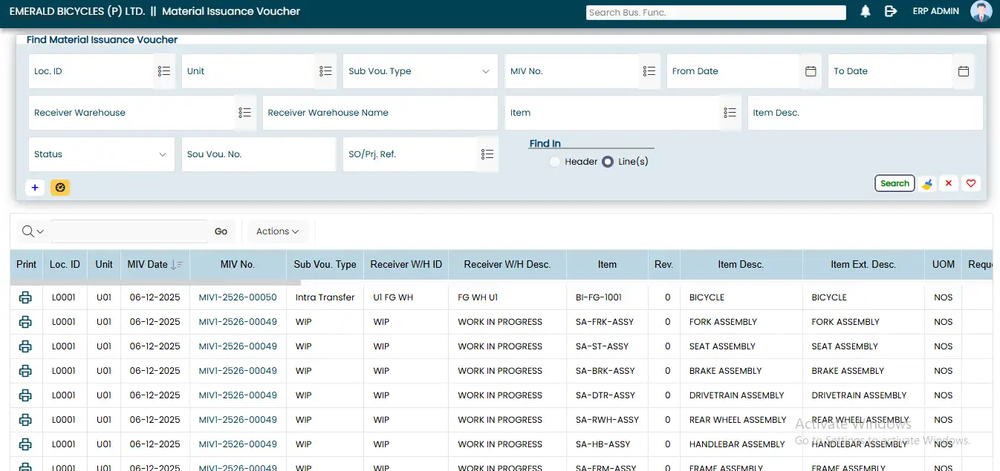
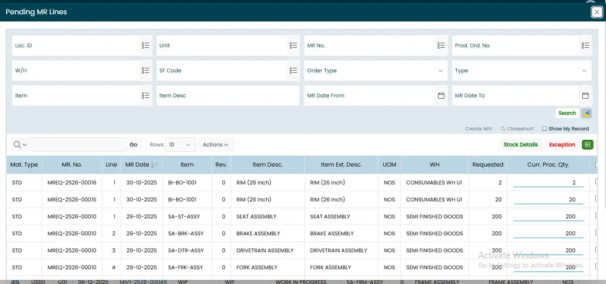
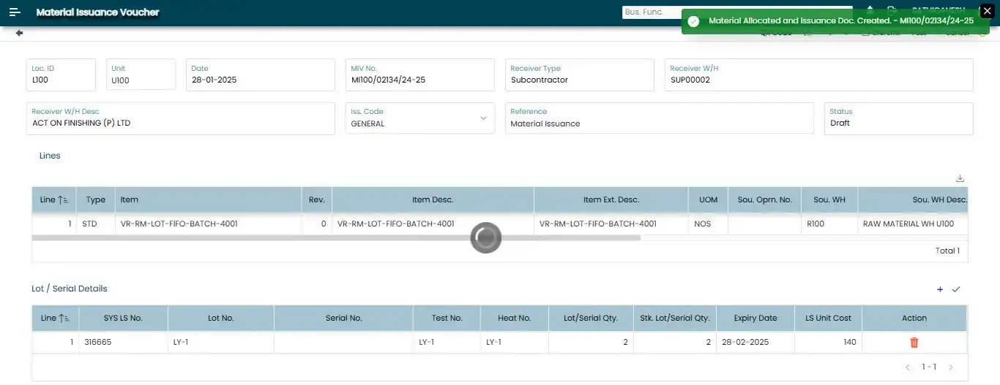
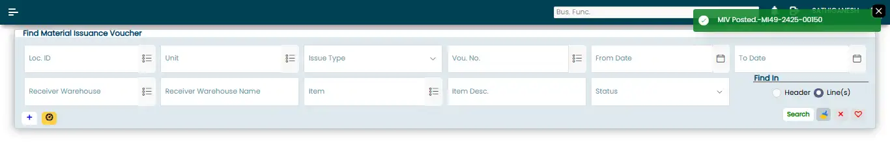

<div data-category="Inventory Control" data-title="Material Issuance Voucher" data-updated="January 27, 2026" data-contributors="RoadmapIT" data-breadcrumb="Home,Inventory Control,Material Issuance Voucher">
  <div class="page-content">
    <p>A material issuance voucher is a document that authorizes the release of materials from the inventory to a production department or another location, material issuance voucher records the details of the materials issued.</p>
    <h5>Navigation path:</h5>
    <p class="fs-6">Supply Chain Management \ Inventory \ Transaction \ Material Issuance voucher</p>
    
    <ul style="list-style-type: none; align-content: center">
      <li class="mouse-icon">Search screen displays the list of Material Issuance vouchers with the relevant details and its status</li>
      <li class="mouse-icon">User can filter the respective documents by entering the search parameters at the header.</li>
      <li class="mouse-icon">On clicking search button, system displays the results relevant to the search parameters entered.</li>
      <li class="mouse-icon">
        Using
        
        icon, entered search parameters can be cleared.
      </li>
      <li class="mouse-icon">
        To close the screen, use
        <i class="bi bi-x fs-4 mx-2 text-danger"></i>
        icon.
      </li>
      <li class="mouse-icon">
        Click
        <i class="bi bi-plus fs-4 mx-2 text-primary"></i>
        button to create new Material Issuance Voucher (MIV) by entering all the mandatory fields displayed in the Add dialog
      </li>
    </ul>
    
    <ul style="list-style-type: none; align-content: center">
      <li class="mouse-icon">Click on Create Issuance button to convert the approved material request to Issuance</li>
      <li class="mouse-icon">Select the MR number in LOV and filter the record</li>
      <li class="mouse-icon">Select the Material request for which the MIV should be created</li>
      <li class="mouse-icon">Click on Create MI button to create the material issuance voucher</li>
    </ul>
    
    <ul style="list-style-type: none; align-content: center">
      <li class="mouse-icon">After creating MIV, system navigates to the concerned document in the MIV screen</li>
      <li class="mouse-icon">In case of Lot / Serial Items, Lot Nos. are fetched automatically and User is also allowed to select the respective Lot no. to be issued.</li>
      <li class="mouse-icon">Click on Post button to post the material Issuance voucher.</li>
    </ul>
    
  </div>
</div>
